<title>Anthropogenic Labels Verification</title>
<link rel="stylesheet" href="https://fonts.googleapis.com/css2?family=Archivo:wdth,wght@87.5,500;87.5,700&family=IBM+Plex+Sans:ital,wght@0,400;0,500;1,400&family=IBM+Plex+Mono:wght@400;500&display=swap">
<style>
  :root {
    --paper: #F4F6F4; --ink: #1B2229; --muted: #5A6670; --rule: #D3DAD6; --panel: #EBEFEC;
    --noise: #2b6ca3; --traffic: #d9822b; --train: #7b3f9e; --red: #A32D2D;
  }
  @media (prefers-color-scheme: dark) {
    :root:not([data-theme="light"]) {
      --paper: #141A1E; --ink: #E6EAE7; --muted: #97A3A9; --rule: #2C353B; --panel: #1C2429;
      --noise: #6fa8dc; --traffic: #e9a15c; --train: #b48ad6; --red: #E06B6B;
    }
  }
  :root[data-theme="dark"] {
    --paper: #141A1E; --ink: #E6EAE7; --muted: #97A3A9; --rule: #2C353B; --panel: #1C2429;
    --noise: #6fa8dc; --traffic: #e9a15c; --train: #b48ad6; --red: #E06B6B;
  }
  body { background: var(--paper); color: var(--ink); font-family: "IBM Plex Sans", "Helvetica Neue", Arial, sans-serif;
         font-size: 15.5px; line-height: 1.5; padding-block: 40px 80px; padding-inline: 20px; }
  main { max-width: 900px; margin: 0 auto; }
  h1, h2, h3 { font-family: "Archivo", "Helvetica Neue", Arial, sans-serif; font-stretch: 87.5%; text-wrap: balance; line-height: 1.15; }
  h1 { font-size: 32px; font-weight: 700; margin: 6px 0 4px; }
  h2 { font-size: 22px; font-weight: 700; margin: 0 0 12px; padding-top: 6px; }
  h3 { font-size: 17px; font-weight: 700; margin: 18px 0 8px; }
  .eyebrow, .k { font-family: "IBM Plex Mono", Menlo, Consolas, monospace; font-size: 11.5px; letter-spacing: 0.08em; text-transform: uppercase; color: var(--muted); }
  header { border-bottom: 2px solid var(--ink); padding-bottom: 18px; margin-bottom: 30px; }
  .lede { color: var(--muted); margin: 0; max-width: 70ch; }
  section { margin-bottom: 40px; }
  p { margin: 0 0 12px; max-width: 72ch; }
  ul, ol { margin: 0 0 12px; padding-left: 20px; max-width: 72ch; }
  li { margin-bottom: 6px; }
  code { font-family: "IBM Plex Mono", Menlo, monospace; font-size: 13.5px; }
  pre { font-family: "IBM Plex Mono", Menlo, monospace; font-size: 13px; background: var(--panel); padding: 12px 14px; overflow-x: auto; border-radius: 3px; }
  table { border-collapse: collapse; width: 100%; font-size: 14px; font-variant-numeric: tabular-nums; margin: 6px 0 16px; }
  th, td { text-align: left; vertical-align: top; padding: 7px 10px 7px 0; border-bottom: 1px solid var(--rule); }
  th { font-family: "IBM Plex Mono", Menlo, monospace; font-size: 11.5px; letter-spacing: 0.06em; text-transform: uppercase; color: var(--muted); font-weight: 500; }
  td.num { font-family: "IBM Plex Mono", Menlo, monospace; font-size: 13px; white-space: nowrap; }
  .twrap { overflow-x: auto; }
  .verdict { background: var(--panel); border-left: 4px solid var(--train); padding: 14px 18px; margin: 0 0 22px; }
  .verdict p { margin: 0 0 8px; max-width: none; }
  .verdict p:last-child { margin: 0; }
  figure { margin: 16px 0 24px; }
  figure img { width: 100%; height: auto; display: block; border: 1px solid var(--rule); background: #fff; }
  figcaption { font-size: 13.5px; color: var(--muted); margin-top: 8px; max-width: 80ch; }
  figcaption strong { color: var(--ink); }
  .check { border: 1px solid var(--rule); border-left: 4px solid var(--traffic); padding: 10px 14px; margin: 10px 0 16px; font-size: 14.5px; max-width: 80ch; }
  .check .k { display: block; margin-bottom: 4px; }
  .risk { border-left-color: var(--red); }
  .swatch { display: inline-block; width: 10px; height: 10px; border-radius: 2px; margin-right: 4px; vertical-align: middle; }
  a { color: var(--train); }
  @media (max-width: 480px) { h1 { font-size: 26px; } }
</style>

<main>
<header>
  <div class="eyebrow">tiny-cnn-seismicML · label verification · 14 Sept 2026</div>
  <h1>Are the Noise, Traffic, Train and Aircraft labels right?</h1>
  <p class="lede">Every rule that assigns a label to a 60 s window in the anthropogenic datasets, with the windows it produced, so a reader can check the labels against the data rather than trust the counts. Covers the Romig Middle School station-days (Traffic / Noise), the Potter station-days (Train), and the Turnagain station-days under the airport's departure path (Aircraft).</p>
</header>

<section>
  <div class="verdict">
    <p><strong>Traffic vs Noise at Romig holds up.</strong> Daytime windows carry 3 to 5× the night energy, broadband 3 to 45 Hz with the 5 to 20 Hz road hump; night windows are quiet apart from single vehicle passes, which are now labeled Traffic when they exceed 20× the night level. Two known contaminants are handled: catalogued earthquakes are excluded, and the school building's scheduled machinery is documented but still in the Traffic windows.</p>
    <p><strong>Train at Potter (AK.K222) is clean.</strong> 8 of 8 timetabled passenger passages over two days were found within 2 to 6 min of the estimate, at 12 to 30× the surrounding level, including a pair of passages 11 min apart where two trains met at the siding. Unscheduled spikes at the same station, freight most likely, are currently labeled Noise; that is the open issue for this class.</p>
    <p><strong>Aircraft: a first set, weakly labeled.</strong> On a 100 Hz Shake an aircraft is a 30 to 90 s broadband burst above 15 Hz with an emergent rise and decay, heard at both Turnagain stations at once; engine tones and their Doppler glide sit above 50 Hz and do not survive the sampling. A rule on the 20 to 45 Hz band (2.5× the local median, ≥ 15 s active, coincident at 2 stations) gives 64 windows on Wednesday and 21 on Saturday, most of them the night cargo departures. The airfield's strong-motion sensor sees nothing. ADS-B times would confirm these; for now the review page is the check.</p>
  </div>
</section>

<section>
  <h2>1. Data</h2>
  <div class="twrap">
  <table>
    <tr><th>Station</th><th>Sensor</th><th>Where</th><th>Days (local)</th><th>Used for</th></tr>
    <tr><td>AM.R1796</td><td>Raspberry Shake RS4D, EHZ geophone, 100 Hz</td><td>Romig Middle School, 120 m; Minnesota Dr; 940 m from the railroad</td><td>Wed 2026-09-09, Sat 2026-09-12</td><td>Traffic / Noise</td></tr>
    <tr><td>AM.R3130</td><td>Raspberry Shake RS1D, EHZ geophone, 100 Hz</td><td>Romig / West High campus, 450 m</td><td>same</td><td>Traffic / Noise</td></tr>
    <tr><td>AK.K222</td><td>Strong-motion accelerometer, HNZ, 200 Hz → 100 Hz</td><td>Chapel by the Sea, Potter; 100 m from the Seward line</td><td>same</td><td>Train / Noise</td></tr>
    <tr><td>AK.K204, K220, K208</td><td>Strong-motion accelerometers</td><td>ANC airfield (Signature FBO), Kincaid Park, Spenard</td><td>2026-09-09</td><td>Aircraft feasibility only</td></tr>
    <tr><td>AM.RFD97, R9286</td><td>Raspberry Shake geophones, EHZ, 100 Hz</td><td>Turnagain, 3.0 to 3.2 km north of runway 15/33, under its departure path</td><td>Wed 2026-09-09, Sat 2026-09-12</td><td>Aircraft / Noise (stored 2 to 45 Hz)</td></tr>
  </table>
  </div>
  <p>All data are pulled after the fact from the public FDSN archives (Raspberry Shake for AM, IRIS for AK) by <code>scripts/collect_continuous_windows.py</code>. Windows are 60 s, non-overlapping, aligned to whole minutes, at 100 Hz after linear detrend, demean, a 2 s taper, low-pass at 40 Hz when downsampling, and a 2 to 20 Hz bandpass (the convention of the AK earthquake set). Windows within 2 s of a data gap are skipped. Every window carries per-window features computed on the unfiltered, detrended data: raw <code>rms</code> and <code>peak</code>, and <code>rms_band</code> / <code>peak_band</code> in 5 to 30 Hz, plus <code>band_ratio</code>, STA/LTA and kurtosis, all in the metadata CSV.</p>
</section>

<section>
  <h2>2. The rules, with their parameters</h2>
  <div class="twrap">
  <table>
    <tr><th>Rule</th><th>Assigns</th><th>Parameters</th><th>Stored as <code>label_method</code></th></tr>
    <tr><td>Time of day</td><td>Traffic to 07:00 to 19:00 local, Noise to 01:00 to 05:00; other hours dropped</td><td>tz America/Anchorage</td><td><code>timeofday:…day7-19:night1-5</code></td></tr>
    <tr><td>Night burst</td><td>Traffic to a night window whose 5 to 30 Hz peak ≥ 20 × the station's median night 5 to 30 Hz rms</td><td>factor 20</td><td><code>…+burst>=20x</code></td></tr>
    <tr><td>Earthquake exclusion</td><td>Drops any window overlapping a USGS event of M ≥ 2 within 2° of the station, from origin time to +120 s</td><td>minmag 2.0, radius 2°, coda 120 s</td><td>window absent</td></tr>
    <tr><td>Timetable search</td><td>Train to the windows inside ±15 min of a scheduled passage whose 5 to 30 Hz rms ≥ 3 × the median of that span; every run above threshold is kept; the rest of the span is dropped as ambiguous; windows outside every span are Noise</td><td>search 900 s, factor 3, max 6 windows per run</td><td><code>events:search900s,rms>=3x</code></td></tr>
    <tr><td>Band rule, coincident</td><td>Aircraft to a window whose 20 to 45 Hz rms ≥ 2.5 × the rolling median over ±15 min at its station, with ≥ 15 s of the window above that level, and a positive at ≥ 2 stations within ±1 min; single-station positives dropped; the rest Noise</td><td>band 20 to 45 Hz, local reference 15 min, factor 2.5, active 15 s, coincidence 2; stored band 2 to 45 Hz</td><td><code>rule:rms20-45Hz>=2.5xlocal15min,active>=15s,coincident>=2</code></td></tr>
  </table>
  </div>
  <p>The timetable is <code>configs/arr_schedule.yaml</code> (Alaska Railroad summer 2026: Coastal Classic 06:45 out / 22:15 back, Glacier Discovery 09:45 / 21:15, Denali Star 08:15 / 20:00, plus per-station passage offsets, +30 min to Potter southbound), expanded by <code>scripts/make_train_events.py</code>. Labels are the global integers of <code>src/data/labels.py</code>: 0 Noise, 1 Traffic, 4 Train.</p>
</section>

<section>
  <h2>3. What the rules produced</h2>
  <div class="twrap">
  <table>
    <tr><th>Day (local)</th><th>Station</th><th>Noise</th><th>Traffic, time of day</th><th>Traffic, night burst</th><th>Train</th><th>Dropped: earthquake / ambiguous</th></tr>
    <tr><td>Wed 09-09</td><td>R1796</td><td class="num">203</td><td class="num">705</td><td class="num">34</td><td class="num"></td><td class="num">27 / 0</td></tr>
    <tr><td>Wed 09-09</td><td>R3130</td><td class="num">229</td><td class="num">705</td><td class="num">8</td><td class="num"></td><td class="num">27 / 0</td></tr>
    <tr><td>Sat 09-12</td><td>R1796</td><td class="num">213</td><td class="num">706</td><td class="num">24</td><td class="num"></td><td class="num">21 / 0</td></tr>
    <tr><td>Sat 09-12</td><td>R3130</td><td class="num">223</td><td class="num">699</td><td class="num">14</td><td class="num"></td><td class="num">21 / 0</td></tr>
    <tr><td>Wed 09-09</td><td>K222</td><td class="num">1,228</td><td class="num"></td><td class="num"></td><td class="num">7</td><td class="num">22 / 110</td></tr>
    <tr><td>Sat 09-12</td><td>K222</td><td class="num">1,233</td><td class="num"></td><td class="num"></td><td class="num">6</td><td class="num">21 / 110</td></tr>
    <tr><td>Wed 09-09</td><td>RFD97 + R9286</td><td class="num">2,690</td><td class="num"></td><td class="num"></td><td class="num">64 Aircraft</td><td class="num">48 / 72 single-station</td></tr>
    <tr><td>Sat 09-12</td><td>RFD97 + R9286</td><td class="num">2,750</td><td class="num"></td><td class="num"></td><td class="num">21 Aircraft</td><td class="num">42 / 67 single-station</td></tr>
  </table>
  </div>
  <p>Totals: 868 Noise and 2,895 Traffic windows at Romig; 13 Train windows and 2,461 Noise windows at Potter (the config for the season pull keeps 5 % of the Noise); 85 Aircraft windows at Turnagain. The earthquakes dropped on 09-09 include an M2.9 at 40 km at 10:35 local that sat inside a Traffic window with P and S visible.</p>
</section>

<section>
  <h2>4. Look at the windows</h2>
  <figure>
    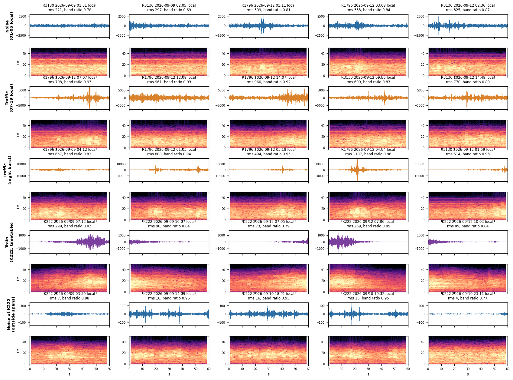
    <figcaption><strong>Figure 1. Five random stored windows per (class, rule), one amplitude scale per row.</strong> Rows: Noise at Romig (01 to 05 local); Traffic by time of day; Traffic by night burst; Train at K222; Noise at K222 outside the search spans. Titles give the local time, the raw rms and the 5 to 30 Hz band ratio. Spectrograms are of the stored 2 to 20 Hz window; energy above 20 Hz is filter roll-off.</figcaption>
  </figure>
  <div class="check"><span class="k">What to check</span> Noise rows should be quiet with at most small isolated transients; Traffic (time of day) should be sustained broadband 5 to 20 Hz energy; Traffic (night burst) should be one or two 3 to 6 s vehicle passes in an otherwise quiet minute; Train should be a 20 to 40 s spindle of 5 to 30 Hz energy with an emergent onset, sometimes split across two windows. Anything else in a row is a mislabel worth a note.</div>
  <div class="check risk"><span class="k">Known softness</span> Night Noise windows still contain vehicle passes below the 20× threshold (the R1796 01:11 panel has one at about 2,500 counts against a 6,600-count threshold). Lowering the factor to 12 would move roughly 10 % more night windows to Traffic; the trade is more false bursts from footsteps and doors.</div>
</section>

<section>
  <h2>5. Traffic and Noise at Romig</h2>
  <figure>
    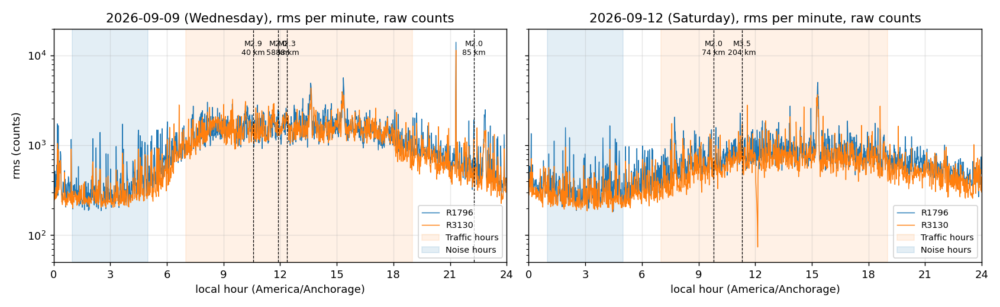
    <figcaption><strong>Figure 2. Raw rms per minute, both stations, both days, local time.</strong> Orange band: hours labeled Traffic; blue band: hours labeled Noise; dashed lines: catalogued earthquakes (excluded). The night floor is 240 to 310 counts at both stations; the weekday plateau 06:00 to 18:00 runs 1,000 to 2,000; Saturday about 3× night. Median Traffic / Noise rms: 5.4 / 5.6× on Wednesday (R1796 / R3130), 2.6 / 2.7× on Saturday.</figcaption>
  </figure>
  <figure>
    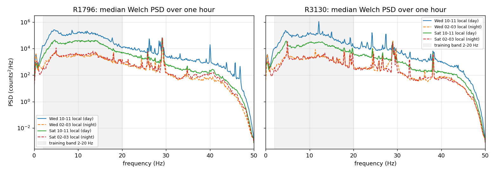
    <figcaption><strong>Figure 3. Median Welch PSD over one hour, day (10 to 11 local) vs night (02 to 03), raw data, 0 to 50 Hz.</strong> The contrast is broadband 3 to 45 Hz with the road-traffic hump at 5 to 20 Hz: 1.5 to 2 decades on the weekday inside the training band. Narrow lines at 26, 29, 38 and 40 Hz persist at night: machinery, not traffic.</figcaption>
  </figure>
  <figure>
    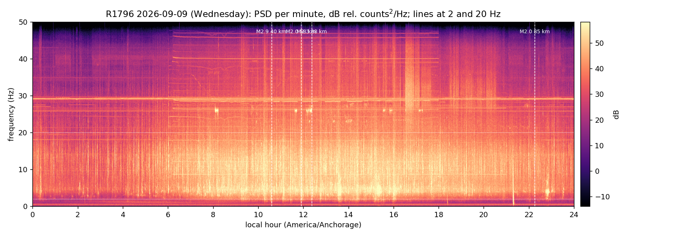
    <figcaption><strong>Figure 4. R1796, Wednesday, one Welch PSD per minute, 0 to 50 Hz.</strong> Broadband energy rises at 06:00 and falls at 18:00. A block of tonal lines at 39 to 47 Hz, and one near 8.5 Hz, switches on at 06:10 and off at 18:00 sharp: the school building's scheduled equipment. The 8.5 Hz line is inside the 2 to 20 Hz training band, so it is present in every daytime Traffic window from this station.</figcaption>
  </figure>
  <div class="check risk"><span class="k">Label risk: building schedule</span> A model trained on R1796 alone could learn the HVAC timetable as "Traffic". R3130 carries a different set of lines (12, 24, 27, 30 Hz), which helps; a third station away from a large building (R4017 is in the config as contrast) helps more. The daytime label is best described to students as "human activity around the school" rather than road traffic alone.</div>
  <figure>
    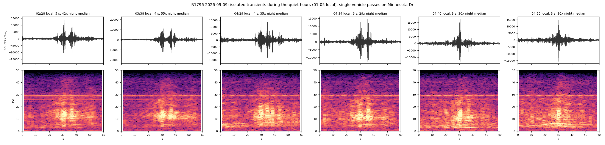
    <figcaption><strong>Figure 5. Six isolated transients between 02:28 and 04:50 local at R1796.</strong> 3 to 6 s long, 5 to 25 Hz, 30 to 55× the night envelope median, peaks of 15,000 to 20,000 counts: single vehicles on Minnesota Dr. These are what the night-burst rule turns into Traffic.</figcaption>
  </figure>
  <figure>
    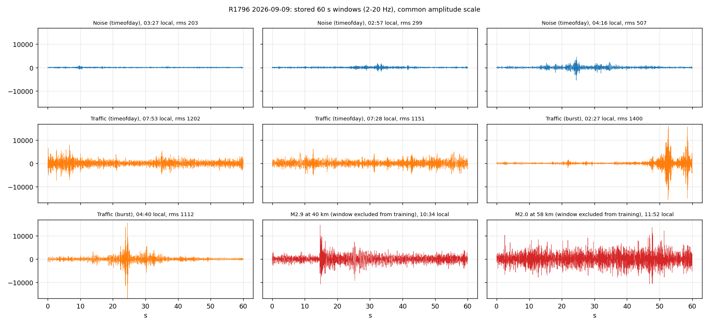
    <figcaption><strong>Figure 6. Stored windows on one amplitude scale, including the two excluded earthquake windows.</strong> The M2.9 at 40 km (10:34 local) shows P at 15 s and S at 25 s; without the catalog exclusion it would have been a Traffic window.</figcaption>
  </figure>
</section>

<section>
  <h2>6. Train at Potter</h2>
  <figure>
    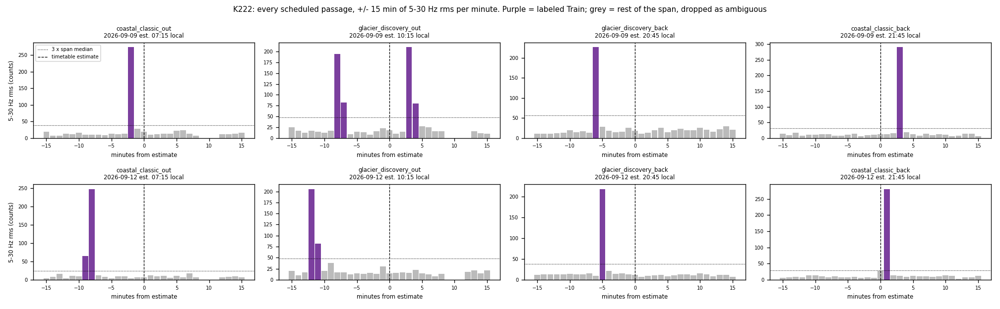
    <figcaption><strong>Figure 7. Every scheduled passage at K222, ±15 min of 5 to 30 Hz rms per minute.</strong> Dashed line: timetable estimate; dotted line: 3× the span median; purple: labeled Train; grey: the rest of the span, dropped as ambiguous. Detections sit 2 to 6 min from the estimates (before the estimate for outbound trains, i.e. the +30 min Potter offset is slightly generous). The Wednesday Glacier Discovery panel has two spindles 11 min apart: two trains meeting at the Potter siding, both labeled.</figcaption>
  </figure>
  <figure>
    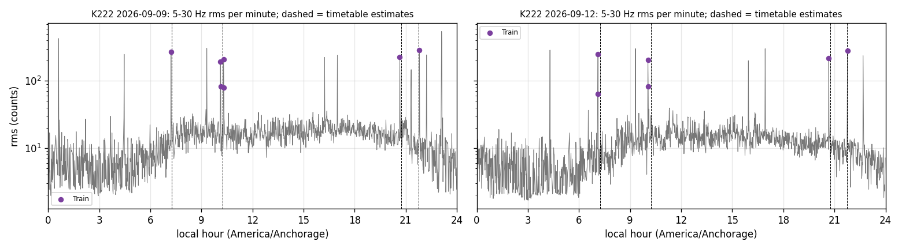
    <figcaption><strong>Figure 8. K222 full days.</strong> Purple dots: labeled Train; dashed: timetable estimates. The spikes without a dashed line (about 09:20, 16:20, 17:00, 21:20 and 22:40 on Wednesday) are passages the passenger timetable does not know about, freight most likely.</figcaption>
  </figure>
  <div class="check risk"><span class="k">Label risk: unscheduled trains in Noise</span> Those unscheduled spikes are outside every search span, so they are labeled Noise at K222 today. Before training, either drop K222 Noise windows whose 5 to 30 Hz rms exceeds about 3× the day's median, or promote long (≥ 20 s) bursts to Train through the burst rule with a duration test. The season pull (<code>configs/train_stations.yaml</code>, one commented range) will make this the largest source of Train windows.</div>
  <div class="check"><span class="k">What to check</span> In Figure 7, each purple bar should be one spindle in the gallery (Figure 1, Train row). Look for any purple bar that is a short spike rather than a 20 to 40 s spindle: that would be a vehicle or a door, not a train. None of the 13 looks like that in this batch.</div>
</section>

<section>
  <h2>7. Aircraft at Turnagain</h2>
  <figure>
    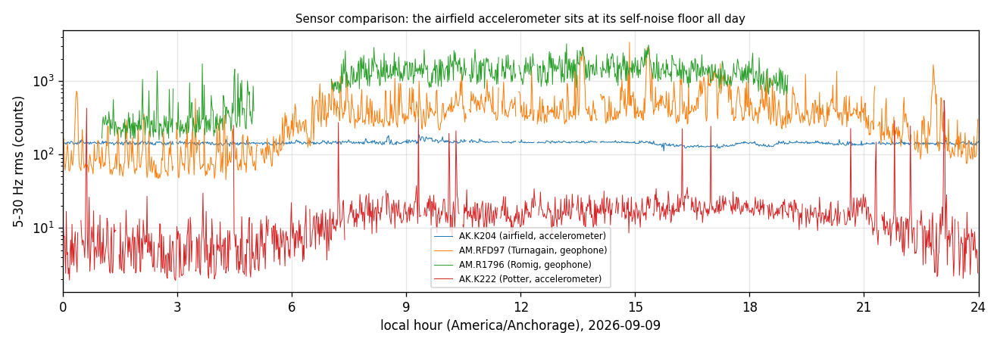
    <figcaption><strong>Figure 9. 5 to 30 Hz rms per minute on Wednesday at four stations.</strong> The airfield accelerometer (AK.K204, 530 m from the runways) is flat at 135 to 187 counts all day with a Gaussian peak/rms of 3.3: instrument self-noise. Strong-motion sensors cannot see aircraft; the two Turnagain geophones (RFD97, R9286; 3 km north of runway 15/33, under its departure path) can.</figcaption>
  </figure>
  <figure>
    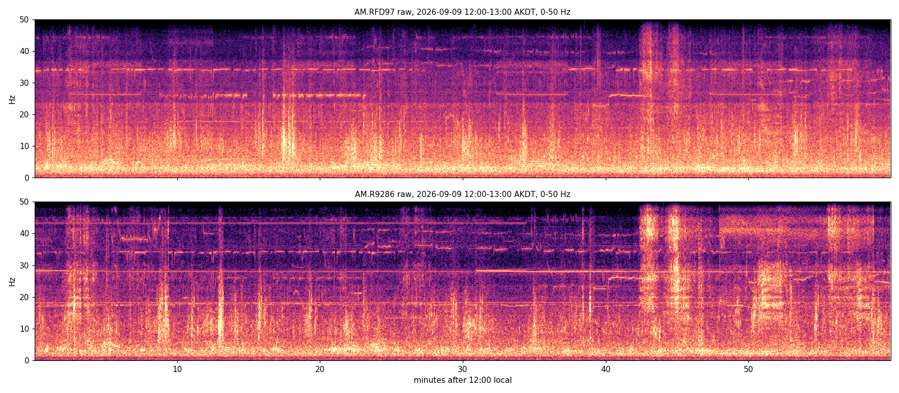
    <figcaption><strong>Figure 10. Raw 0 to 50 Hz spectrograms, both Turnagain stations, 12:00 to 13:00 local on Wednesday.</strong> Two broadband events at 30 to 50 Hz near minutes 42 and 45 appear at both stations, 1 km apart, which a vehicle cannot do. Horizontal lines (26, 34 Hz) are machinery.</figcaption>
  </figure>
  <figure>
    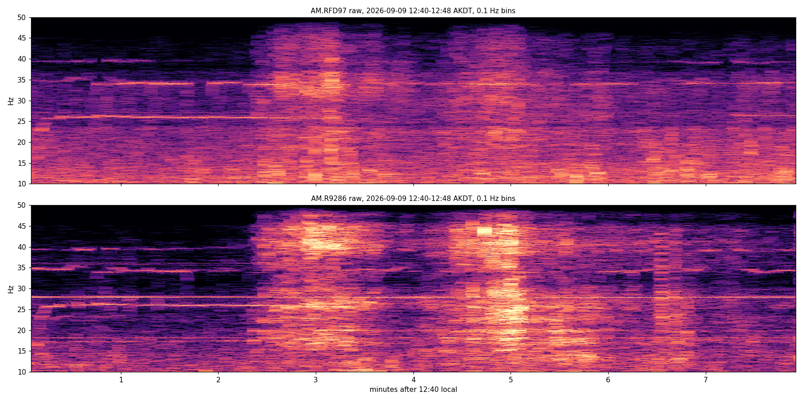
    <figcaption><strong>Figure 11. The same two events at 0.1 Hz resolution, 12:40 to 12:48 local.</strong> Each is an 80 s broadband burst at 15 to 50 Hz with an emergent rise and decay: two departures on runway 33 climbing over Turnagain two minutes apart. No tonal Doppler glide is visible; engine tones sit above the 50 Hz Nyquist of a Shake, so what survives is jet noise, above the road-traffic band and twenty times longer than a car.</figcaption>
  </figure>
  <figure>
    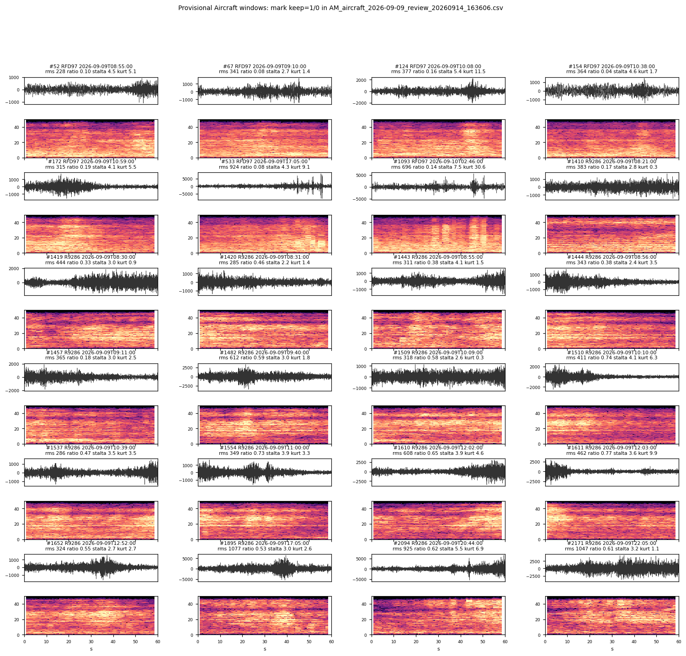
    <figcaption><strong>Figure 12. 24 of the 64 windows the band rule labeled Aircraft on Wednesday</strong> (20 to 45 Hz rms ≥ 2.5× the local median, ≥ 15 s active, coincident at both stations). Band ratio here is the 20 to 45 Hz share of the energy. Most are the night cargo departures (00 to 05 local, 38 of 64). Two impulsive windows at RFD97 (09:05, kurtosis 9; 18:46, kurtosis 31) do not fit the signature and are candidates for Disagree.</figcaption>
  </figure>
  <div class="check risk"><span class="k">Label risk: weak labels and the training band</span> These windows are labeled by signal shape and coincidence, not by a flight record; ADS-B times from an OpenSky account (<code>scripts/fetch_flights_opensky.py</code>) would confirm them. The aircraft energy lies above 20 Hz, so this set is stored with a 2 to 45 Hz band; the earthquake and traffic sets use 2 to 20 Hz. A Human model that includes Aircraft needs one band for all of its classes, and the CLUE tile's preprocessing has to match it.</div>
</section>

<section>
  <h2>8. Reproduce and review</h2>
  <pre>python scripts/collect_continuous_windows.py --config configs/am_stations.yaml     # Romig Traffic / Noise
python scripts/collect_continuous_windows.py --config configs/train_stations.yaml  # K222 Train
python scripts/collect_continuous_windows.py --config configs/aircraft_stations.yaml  # Turnagain Aircraft
python scripts/plot_am_diagnostics.py --config configs/am_stations.yaml --out docs/figures
python scripts/plot_label_report_figures.py --train-dir &lt;dir with AK_train_full_* and AK_k222_all_*&gt; --out docs/figures</pre>
  <p>Each run writes <code>&lt;prefix&gt;_waveforms_&lt;stamp&gt;.npy</code>, <code>_labels_</code>, <code>_metadata_.csv</code>, a summary, an events report (<code>_events_report.csv</code>) in timetable mode, and with <code>--review-sheet N</code> a PNG grid of N random positive windows plus a CSV with a blank <code>keep</code> column. Marking <code>keep</code> 0 / 1 there is the manual pass; the metadata's <code>reviewed</code> and <code>review_label</code> columns are where those decisions belong. Waveform files are never committed (Raspberry Shake terms forbid redistribution; the archives regenerate them bit for bit).</p>
  <p>Review the labels window by window at <a href="review/">review/</a> (Agree / Disagree, CSV download; <code>scripts/apply_review.py</code> merges the CSV back). Repo: <a href="https://github.com/Denolle-Lab/tiny-cnn-seismicML">Denolle-Lab/tiny-cnn-seismicML</a>. Issues: #12 traffic, #10 train, #11 aircraft, #13 roadmap, #18 the train/test leakage in the earthquake model's reported accuracy (a training-split issue, not a labeling one).</p>
</section>
</main>
